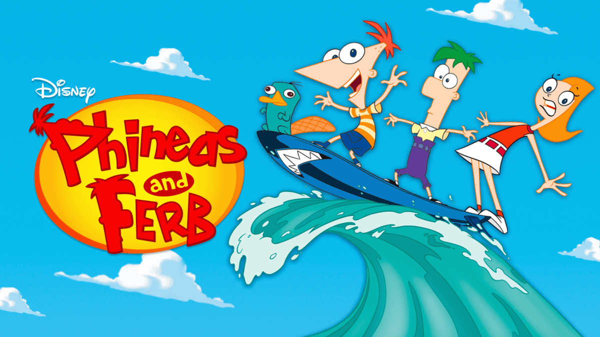

Phineas and Ferb
Phineas and Ferb, an animated comedy series, follows the adventures of Phineas Flynn and his English stepbrother, Ferb Fletcher, on their summer vacation. Each day, the boys and their friends take on some ambitious new project, sometimes to help someone in need, but often just to create something fun.
Main Casts
Phineas and Ferb, an animated comedy series, follows the adventures of Phineas Flynn and his English stepbrother, Ferb Fletcher, on their summer vacation. Each day, the boys and their friends take on some ambitious new project, sometimes to help someone in need, but often just to create something fun.